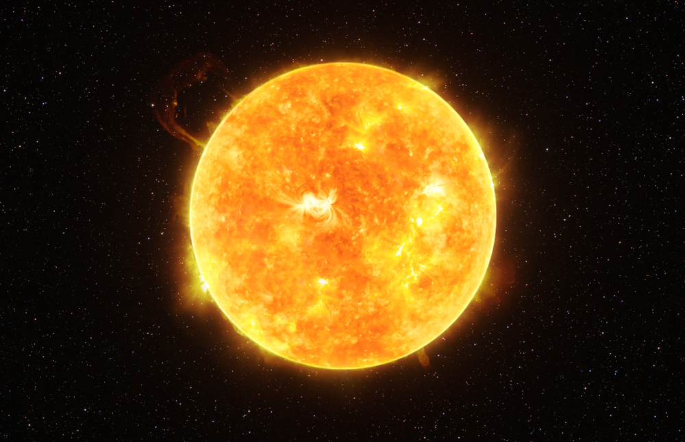

Sun

- The Sun
-
The sun is an ordinary star, one of about 100 billion in our galaxy, the Milky Way.
The sun has extremely important influences on our planet: It drives weather, ocean currents, seasons, and climate, and makes plant life possible through photosynthesis.
-
About 4.5 billion years ago, the sun began to take shape from a molecular cloud that was mainly composed of hydrogen and helium. A nearby supernova emitted a shockwave, which came in contact with the molecular cloud and energized it. The molecular cloud began to compress, and some regions of gas collapsed under their own gravitational pull.
-
As one of these regions collapsed, it also began to rotate and heat up from increasing pressure. Much of the hydrogen and helium remained in the center of this hot, rotating mass. Eventually, the gases heated up enough to begin nuclear fusion, and became the sun in our solar system.
- Diameter
- 864,938 miles (1.392 million km)
- Mass
- 1.989 x 1030 kilograms
- about 333,000 times the mass of the Earth
- Volume
- Composition
- 92.1% Hydrogen (H)
- 7.9% Helium (He)
- Surface Temperature
- 10,340 degrees Fahrenheit (5,726 degrees Celsius)
- Core Temperature
- 27,000,000 Fahrenheit (15,000,000 Celsius)
- Facts
- The sun also rotates, complete rotation differs by latitude
- The sun contains 99.8 percent of the mass of the entire solar system
- It takes eight minutes for light to reach Earth from the Sun
- The energy created by the Sun's core is nuclear fusion
- The sun also contains oxygen, carbon, nitrogen, magnesium, neon, iron, sulfur, aluminum, calcium, sodium, nickel, and argon.
- References